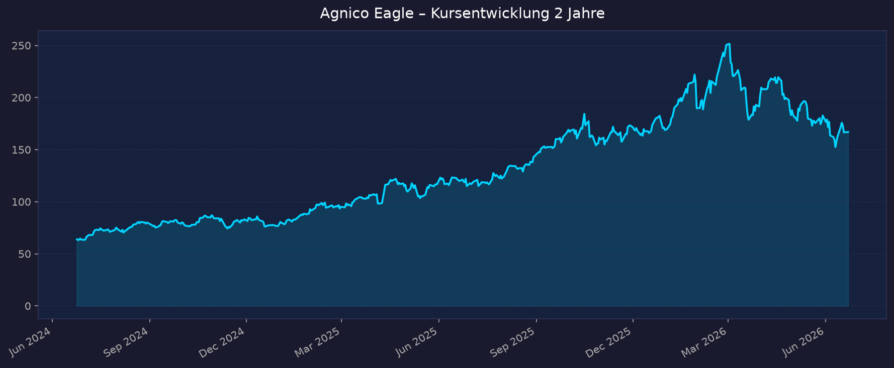
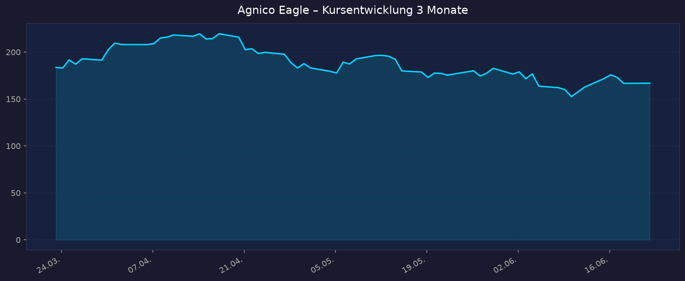

Agnico Eagle Mines (AEM) – Aktienanalyse
These: Gold-Megatrend, stärkste Bilanz der Firmengeschichte, KGV ~15,7 (günstig), aktuell rund −35 % vom 52-Wochen-Hoch infolge der Gold-Korrektur. Profil: aggressiv / antizyklisch. Stand: 2026-06-23 · Kurs 166,85 USD · NYSE · GICS Materials (Gold)
1. 📈 Kursentwicklung


| Kennzahl | Wert |
|---|---|
| Aktueller Kurs | 166,85 USD |
| Veränderung heute | +0,11 % (Vortag 166,66) |
| 52-Wochen-Hoch | 255,24 USD |
| 52-Wochen-Tief | 114,60 USD |
| Abstand zum 52W-Hoch | −34,6 % |
| 2-Jahres-Performance | +161,0 % |
| 3-Monats-Performance | −9,1 % |
| Marktkapitalisierung | ~83,4 Mrd. USD |
Die 2-Jahres-Sicht zeigt einen massiven Aufwärtstrend (+161 %), getragen vom Gold-Bullenmarkt. Seit dem ATH bei ~255 USD läuft eine Korrektur, die den Kurs rund ein Drittel zurückgeworfen hat – im Einklang mit der Gold-Korrektur (Gold fiel von ~5.600 auf zeitweise unter 4.900 USD/oz, danach Stabilisierung über 5.000). Das ist der Kern der antizyklischen These.
2. 💰 Bewertung
| Kennzahl | Wert |
|---|---|
| KGV (trailing) | 15,7 |
| KGV (forward) | 11,5 |
| Kurs/Umsatz (P/S) | 6,2 |
| EPS (trailing) | 10,61 USD |
| Dividendenrendite | ~1,1 % |
| Quartalsdividende | 0,45 USD (Payout ~15 %) |
Das KGV von ~15,7 (forward 11,5) ist für einen Branchenprimus mit Rekordmargen historisch günstig. Bei einem realisierten Goldpreis von >4.000 USD/oz und AISC um 1.475 USD/oz liegt die operative Marge nahe 95 % – die Gewinnbasis ist außergewöhnlich hoch. Das niedrige forward-KGV signalisiert weiteres Gewinnwachstum (Zacks: +60 % EPS-Wachstum 2026 erwartet). Die Dividende ist mit ~15 % Ausschüttungsquote sehr konservativ und durch den Free Cashflow vielfach gedeckt.
3. 📊 Handelsvolumen & Liquidität
| Kennzahl | Wert |
|---|---|
| Ø-Volumen (täglich) | ~2,5 Mio. Aktien |
| Volumen aktuell | ~2,26 Mio. Aktien |
Hohe Liquidität, problemlos handelbar. Volumen aktuell leicht unter dem Durchschnitt – kein Panikverkauf, eher geordnete Konsolidierung.
4. 👥 Insider-Trades (24 Monate)
Per Saldo dominiert in den letzten Monaten Insider-Selling: Berichtet wird Verkaufsaktivität in Höhe von rund 16 Mio. USD, einschließlich eines größeren CEO-Verkaufs (Anfang 2026). Das ist bei einer Aktie nach +160 % in zwei Jahren typisch (Realisierung von Optionsgewinnen) und nicht zwingend ein Warnsignal, schärft aber den Blick auf das Bewertungsrisiko, falls der Goldpreis nachgibt.
Parallel investiert das Unternehmen selbst strategisch in Junior-Miner (Foran Mining ~90 Mio. C$, Collective Mining ~52 Mio. C$, Wallbridge ~22 Mio. C$) – ein Zeichen offensiver Wachstums-/Pipeline-Strategie.
Detaillierte Einzeltransaktionen über openinsider/SEC: nur teilweise verfügbar; obige Angaben aus Sekundärquellen (Simply Wall St, MarketBeat).
5. 📉 Short-Quote
| Kennzahl | Wert |
|---|---|
| Short Float | 0,96 % |
| Short Ratio (Days to Cover) | 1,88 |
Sehr niedrige Short-Quote (<1 %). Der Markt setzt kaum auf fallende Kurse – die Korrektur ist eher Goldpreis- als unternehmensgetrieben. Kein Short-Squeeze-Potenzial, aber auch kein bärisches Stimmungsbild.
6. 📰 Top-News & Kontext
- Q1 2026 Rekordergebnis – Rekord-Betriebsmargen und adjustierter Nettogewinn von ~1,71 Mrd. USD; Aktie reagierte +9,4 % über 7 Tage.
- NCIB-Rückkaufprogramm erneuert – bis zu 25,0 Mio. Aktien / max. 2,0 Mrd. USD (Mai 2026–Mai 2027), Einziehung der Aktien.
- Dividende um 12,5 % erhöht (FY2025-Bericht), Quartalsdividende auf 0,45 USD.
- Rekord-Free-Cashflow 2025: 4,40 Mrd. USD (8,76 USD/Aktie), Gesamtausschüttung 2025 von 1,4 Mrd. USD.
- Schuldenabbau – Q3 2025: Rückzahlung langfristiger Schulden, Cash-Aufbau → "stärkste Bilanz der Firmengeschichte" (Kern der These).
- Hope-Bay-Redevelopment – 2,4-Mrd.-USD-Projekt plus Royalty-Buyback; Aktie kurzfristig −7,3 % (Investitionsbelastung), langfristig Wachstumstreiber.
- Guidance bestätigt: 3,3–3,5 Mio. oz Goldproduktion p.a. bis 2028; AISC 2026 1.400–1.550 USD/oz (Mid 1.475).
- Goldpreis-Kontext: Nach +65 % in 2025 Höchststand ~5.600 USD/oz (Jan 2026), dann Korrektur unter 4.900, Stabilisierung über 5.000. Deutsche Bank hob 2026-Prognose auf 4.450 USD (Range 3.950–4.950) an; Morningstar 2026–28 ~4.700 USD.
- Analysten-Kursziele: Konsens-Fair-Value ~254–258 USD (finviz 257,67), einzelne Modelle bis ~330 USD – deutliches Aufwärtspotenzial gegenüber 167 USD.
7. 🏭 Quartalszahlen (letzte 3 Quartale)
| Quartal | Umsatz | EPS (adj.) | Erw. | Marge / Kontext | FCF | AISC/oz | Kursreaktion |
|---|---|---|---|---|---|---|---|
| Q1 2026 | n. v. (Rekord) | Rekord-adj.-NI ~1,71 Mrd. USD | übertroffen | Rekord-Betriebsmargen, ~95 % | n. v. | 1.483 USD | +9,4 % (7 Tage) |
| Q4 2025 | 3,56 Mrd. USD (+59,6 % YoY) | 2,70 USD | 2,62 USD | realis. Gold 4.163 USD/oz | 1,31 Mrd. USD | 1.517 USD | positiv (Beat) |
| Q3 2025 | 3,06 Mrd. USD (+41,9 % YoY) | 2,16 USD | Beat | NI +86 % YoY | 1,19 Mrd. USD | 1.373 USD | positiv (Beat) |
Guidance: Goldproduktion 2026 unverändert 3,3–3,5 Mio. oz; AISC 2026 1.400–1.550 USD/oz (Mid 1.475); Total Cash Cost 1.020–1.120 USD/oz. Drei-Jahres-Guidance bis 2028 bestätigt. Q1 2026 AISP 1.483 USD/oz, Cash Cost 1.093 USD/oz, Produktion 825.109 oz.
Hinweis: AEM stellte das Geschäftsjahr fiskalisch auf "FY2026" um; Q1 2026 entspricht dem ersten Quartal 2026. Exakte Q1-2026-Umsatzzahl in den Sekundärquellen nicht beziffert → „nicht verfügbar".
8. 🌍 Marktkontext & Wettbewerb
Goldminen-Sektor: Der Sektor profitiert von historisch hohen Goldpreisen und massiver Margenexpansion. Experten sehen für 2026 weiter "goldene" Aussichten für Gold-Equities; die Förderkosten steigen langsamer als der Goldpreis.
Goldpreis-Ausblick: Strukturell bullisch (Zentralbankkäufe, geopolitische Unsicherheit, Fed-Zinssenkungserwartungen), aber nach dem Parabel-Anstieg korrekturanfällig. Deutsche Bank 2026: 4.450 USD (Range 3.950–4.950); Morningstar 2026–28 ~4.700 USD. Das größte Risiko ist ein länger straffer Fed-Kurs (höhere Realzinsen drücken Gold).
Wettbewerber:
- Newmont (NEM): größter Goldproduzent weltweit, breiter diversifiziert, aber operativ weniger konstant.
- Barrick (B/GOLD): vergleichbare Größe, jedoch deutlich höhere Kosten – AISC-Prognose 2026 1.760–1.950 USD/oz gegenüber AEM 1.400–1.550 USD/oz. AEM ist klar kostenführend.
Position AEM: Premium-Bewertung gegenüber Barrick (forward-KGV ~14,7 vs. Industrie), gerechtfertigt durch höhere Eigenkapitalrendite (ROE 18,1 % vs. Barrick 12,1 %), geringere geopolitische Risiken (Schwerpunkt Kanada/Finnland/Australien – stabile Jurisdiktionen) und niedrigste AISC unter den Senior-Produzenten. AEM gilt als Qualitäts-/Sicherheits-Gold-Investment.
Risiken: (1) Goldpreis-Rückschlag bei stärkerem USD / höheren Realzinsen; (2) Kostendruck (Royalties steigen mit dem Goldpreis); (3) Bewertungsrisiko nach starkem Lauf; (4) Projektrisiken (Hope Bay Capex); (5) Insider-Selling als Vorsichtssignal.
9. 🔢 Kennzahlen-Überblick
| Kategorie | Wert |
|---|---|
| Kurs / Währung | 166,85 USD |
| Marktkap. | ~83,4 Mrd. USD |
| KGV (trailing / forward) | 15,7 / 11,5 |
| P/S | 6,2 |
| EPS (TTM) | 10,61 USD |
| Dividendenrendite | ~1,1 % |
| 52W-Hoch / -Tief | 255,24 / 114,60 USD |
| Abstand ATH | −34,6 % |
| Short Float | 0,96 % |
| AISC 2026 (Mid) | 1.475 USD/oz |
| FCF 2025 | 4,40 Mrd. USD |
| Analysten-Kursziel | ~254–258 USD |
📝 Gesamteinschätzung
Agnico Eagle ist der Qualitäts- und Kostenführer unter den Senior-Goldproduzenten. Die These trägt: Rekordmargen (~95 %), Rekord-Free-Cashflow (4,4 Mrd. USD in 2025), entschuldete Bilanz, erhöhte Dividende und ein 2-Mrd.-USD-Rückkaufprogramm – bei einem KGV von nur ~15,7 (forward 11,5). Der Rücksetzer von −35 % gegenüber dem ATH ist nahezu vollständig goldpreis- und nicht unternehmensgetrieben (Short-Quote <1 %, fundamentale Daten auf Rekordniveau).
Das macht AEM zu einem klassisch antizyklischen Setup: Wer an einen strukturell hohen Goldpreis glaubt, kauft hier einen erstklassigen Produzenten in stabilen Jurisdiktionen mit Branchenbestkosten zum Korrekturpreis. Die Analysten-Kursziele (~254 USD Konsens) implizieren rund +50 % Aufwärtspotenzial.
Kehrseite: Das Schicksal der Aktie hängt am Goldpreis. Bei einem nachhaltigen Goldpreis-Rückschlag (straffere Fed, stärkerer USD) ist die Aktie als gehebeltes Goldinvestment überdurchschnittlich betroffen. Das Insider-Selling und die Premium-Bewertung mahnen zur Vorsicht. Für aggressive/antizyklische Anleger ist das Chance-Risiko-Profil attraktiv – aber es ist ein Rohstoff-Zykliker, kein Compounder mit Preissetzungsmacht.
🎯 Ranking-Einordnung
Bewertung nach 5 Kriterien
| # | Kriterium | Gewicht | Punkte (1–10) | Gewichtet | Begründung |
|---|---|---|---|---|---|
| 1 | Wachstum & Megatrend | 25 % | 7 | 1,75 | Gold-Megatrend stark, aber Rohstoff-zyklisch statt struktureller Compounder |
| 2 | Bilanz & Profitabilität | 25 % | 9 | 2,25 | Stärkste Bilanz der Firmengeschichte, ~95 % Marge, Rekord-FCF, kostenführend |
| 3 | Bewertung | 20 % | 8 | 1,60 | KGV 15,7 / forward 11,5 historisch günstig, −35 % vom ATH |
| 4 | Wettbewerbsposition | 15 % | 8 | 1,20 | Niedrigste AISC unter Seniors, stabile Jurisdiktionen, höchste ROE |
| 5 | Momentum & Stimmung | 15 % | 5 | 0,75 | Korrektur −9 % (3M), Insider-Selling, aber Short <1 % |
| Gewichteter Gesamt-Score | 100 % | 7,55 / 10 | Solides antizyklisches Qualitätsinvestment |
Szenarien 2031 (5-Jahres-Horizont)
Basis: Kurs 166,85 USD. Annahmen abhängig vom Goldpreis-Pfad.
| Szenario | Annahme | Kursziel 2031 | Potenzial |
|---|---|---|---|
| 🐻 Bär | Gold fällt auf ~3.000 USD/oz, Margenkompression, Bewertungs-De-Rating | ~120 USD | −28 % |
| 🦊 Base | Gold seitwärts/leicht steigend ~4.500–5.000 USD/oz, stetiger FCF, Buybacks | ~290 USD | +74 % |
| 🐂 Bull | Gold >6.000 USD/oz, Margen-Expansion, Pipeline (Hope Bay) liefert | ~430 USD | +158 % |
5-Jahres-Potenzial: −28 % bis +158 % (Median Base +74 %).
⚠️ Disclaimer: Diese Analyse dient ausschließlich Informationszwecken und stellt keine Anlageberatung dar. Alle Angaben ohne Gewähr. Aktien-, insbesondere Rohstoff-/Goldminen-Investments unterliegen hohen Kursrisiken bis zum Totalverlust. Eigene Recherche und ggf. professionelle Beratung sind unerlässlich.
00_Momentum-Aktien USA-EU-Asien – 5-Jahres-Shortlist 2026-06-23